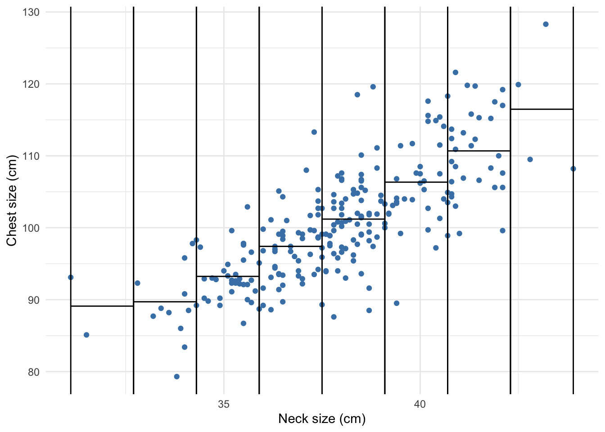
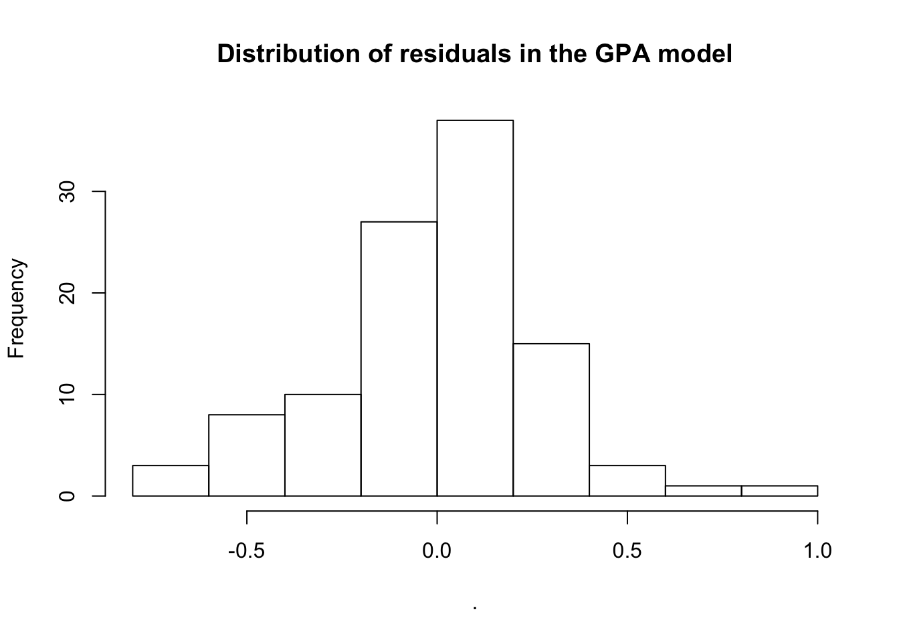
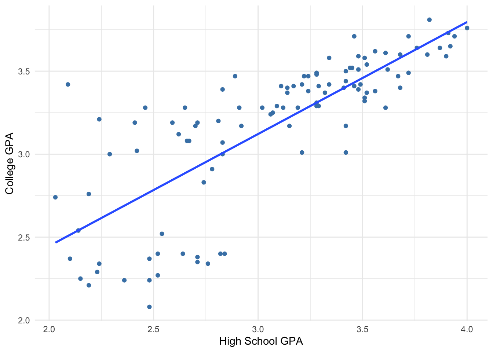

3.7 Model Evaluation
In this section, we consider model evaluation. We seek to develop tools that allow us to answer: is this a “good” model?
3.7.1 Prediction
Let’s consider another data example. Can we predict your college GPA based on your high school GPA? (Disclaimer: this is not Macalester data)
sat %>%
ggplot(aes(x = high_GPA, y = univ_GPA)) +
geom_point(color = 'steelblue') +
geom_smooth(method = 'lm', se = FALSE) +
xlab('High School GPA') +
ylab('College GPA') +
theme_minimal()
First things first. Describe the scatterplot.
- Direction: Positive relationship (higher high school GPA is associated with higher college GPA)
- Form: generally linear
- Strength: There is a weak relationship when high school GPA < 3.0 (\(r = 0.32\)) and a fairly strong relationship when high school GPA > 3.0 (\(r = 0.68\)).
- Unusual: As seen with the strength, there is greater variability in college GPA among individuals with lower high school GPA. That variability decreases with increased high school GPA. We call this pattern of unequal variation as “thickening” or heteroscedasticity (this terms is used quite a bit in econometrics).
The code below computes the correlation coefficients separately for students with high school GPAs above 3 and for students with high school GPAs less than or equal to 3. We see that the correlation is higher for the high GPA group.
sat %>%
mutate(HighHSGPA = high_GPA > 3) %>%
group_by(HighHSGPA) %>%
summarize(Cor = cor(high_GPA,univ_GPA))## # A tibble: 2 x 2
## HighHSGPA Cor
## <lgl> <dbl>
## 1 FALSE 0.316
## 2 TRUE 0.687Let’s build a model to predict college GPA based on high school GPA based on this sample data. Since we noted that there was a linear relationship, let’s find the least squares regression line.
##
## Call:
## lm(formula = univ_GPA ~ high_GPA, data = .)
##
## Residuals:
## Min 1Q Median 3Q Max
## -0.69040 -0.11922 0.03274 0.17397 0.91278
##
## Coefficients:
## Estimate Std. Error t value Pr(>|t|)
## (Intercept) 1.09682 0.16663 6.583 1.98e-09 ***
## high_GPA 0.67483 0.05342 12.632 < 2e-16 ***
## ---
## Signif. codes: 0 '***' 0.001 '**' 0.01 '*' 0.05 '.' 0.1 ' ' 1
##
## Residual standard error: 0.2814 on 103 degrees of freedom
## Multiple R-squared: 0.6077, Adjusted R-squared: 0.6039
## F-statistic: 159.6 on 1 and 103 DF, p-value: < 2.2e-16The best fitting line is
\[ \hbox{Predicted College GPA} = 1.09 + 0.675 \times \hbox{High School GPA} \]
Let’s plug in a few values.
- If High School GPA = 2:
\[ \hbox{Predicted College GPA} = 1.09 + 0.675 \times 2 = 2.44 \]
## [1] 2.44## Calcuation using R's predict() function
sat %>%
lm(univ_GPA ~ high_GPA, data = .) %>%
predict(newdata = data.frame(high_GPA = 2))## 1
## 2.446483- If High School GPA = 3.5:
\[ \hbox{Predicted College GPA} = 1.09 + 0.675 \times 3.5 = 3.45 \]
## [1] 3.4525sat %>%
lm(univ_GPA ~ high_GPA, data = .) %>%
predict(newdata = data.frame(high_GPA = 3.5)) #rounded after prediction## 1
## 3.458728- If High School GPA = 4.5:
\[ \hbox{Predicted College GPA} = 1.09 + 0.675 \times 4.5 = 4.13 \]
## [1] 4.1275sat %>%
lm(univ_GPA ~ high_GPA, data = .) %>%
predict(newdata = data.frame(high_GPA = 4.5)) #rounded after prediction ## 1
## 4.133558Does it make sense to use this model for high school GPA’s > 4? Some high schools have a max GPA of 5.0 due to the weighting of advanced courses.
- What is the maximum high school GPA in this data set?
- What if your college doesn’t allow for GPA’s above 4.0?
## max(high_GPA)
## 1 4Making predictions beyond the observed range of values is called extrapolation and is generally a risky thing to do. If you make prediction for values of \(x\) beyond the minimum or maximum of the observed values, then you are assuming that the relationship you observe can be extended into the new prediction range. This is the main issue of forecasting, making predictions in the future. You have to assume that the trend that you observe now will continue in the future and that the current state of affairs will stay the same. For an infamous case of extrapolation, check out this article that appeared in the journal Nature.
3.7.2 Prediction Errors
Recall that a residual, \(e_i\), for the \(i\)th data point is the difference between the actual and predicted values: \(e_i = y_i - \hat{y}_i\).
If the residuals were approximately unimodal and symmetric, we expect about 95% of the residuals to be within 2 standard deviations of 0 (the mean residual). (Recall Section 2.6.5.)
sat %>%
lm(univ_GPA ~ high_GPA, data = .) %>%
residuals() %>%
hist(main = "Distribution of residuals in the GPA model")
Below we calculate \(SSE\) (the sum of squared errors/residuals), and the standard deviation of the residuals (\(s_e\)).
lm.gpa <- sat %>%
lm(univ_GPA ~ high_GPA, data = .)
SSE <- sum(residuals(lm.gpa)^2)
n <- length(residuals(lm.gpa)) # Sample size
s <- sqrt(SSE/(n-2)) #sd of residuals
s## [1] 0.2814443## [1] 0.5628886Using this model (that is, using your high school GPA), we can predict your college GPA within about \(0.56\) GPA points. Is this useful? Is predicting within a margin of \(0.56\) GPA points good enough? Let’s compare this margin of error with the margin of error about the mean (the standard deviation):
## [1] 0.4471936## [1] 0.8943873Without knowing your high school GPA, we could have just guessed your college GPA as the overall mean college GPA in the sample, and this guess would probably be within \(\pm 0.89\) of your actual college GPA. This is a higher margin of error than the approximate \(0.56\) if we did use your high school GPA (in the simple linear regression model). We are able to predict your college GPA with a smaller margin of error than if we just guessed your college GPA with the mean. Our model has explained some (but not all) of the variation in college GPA.
The standard deviation of college GPA is based on the sum of squared total variation, SSTO (variation around the mean),
\[ SSTO = \sum{(y_i -\bar{y})^2} \]
\(SSTO\) is the numerator of the standard deviation of \(y\) (without knowing anything about \(x\)).
## [1] 20.79814We define \(SSTO\) here because it will help to compare \(SSTO\) to \(SSE\) (sum of squared residuals from the model) to obtain a measure of how well our models are fitting the data - how well they are predicting the outcome.
3.7.3 \(R^2\)
Let’s study how models reduce unexplained variation.
- Before a model is fit, the unexplained variation is given by \(SSTO\). It is the overall variability in the outcome. Think back to interpreting standard deviation and variance as measures of spread. We used these to describe broadly how much the outcome varys
- Unexplained variation in the outcome that remains after modeling is given by \(SSE\), the sum of squared residuals.
So to study how models reduce unexplained variation, we compare the magnitude of the residuals from a linear regression model (which uses the predictor \(x\)) with the original deviations from the mean (which do not use the predictor \(x\)).

We started with the sum of the deviations from the mean \(SSTO = \sum{(y_i - \bar{y})^2}\) before we had info about high school GPA (\(x\)).
Now, with our knowledge of \(x\), we have \(SSE = \sum{(y_i - \hat{y_i})^2}\)
\(SSE\) should be smaller than \(SSTO\) (!)
Two extreme cases:
- If the error \(SSE\) goes to zero, we’d have a “perfect fit”.
If \(SSE = SSTO\), \(x\) has told us nothing about \(y\).
So we define a measure called R-squared, which is the fraction or proportion of the total variation in \(y\) “accounted for” or “explained” by the model in \(x\).
\[ R^2 = 1 - \frac{SSE}{SSTO} = 1 - \frac{ \sum{(y_i - \hat{y_i})^2}}{ \sum{(y_i - \bar{y})^2}}\]
In R, lm() will calculate R-Squared (\(R^2\)) for us, but we can also see that it equals the value from the formula above.
## [1] 0.6077187## # A tibble: 1 x 11
## r.squared adj.r.squared sigma statistic p.value df logLik AIC BIC
## <dbl> <dbl> <dbl> <dbl> <dbl> <int> <dbl> <dbl> <dbl>
## 1 0.608 0.604 0.281 160. 1.18e-22 2 -14.9 35.7 43.7
## # … with 2 more variables: deviance <dbl>, df.residual <int>Is there a “good” value of \(R^2\)? Same answer as correlation – no.
\(R^2\) doesn’t tell you the direction or the form of the relationship.
Note: \(R^2 = r^2\) for simple linear models with one x variable (where \(r\) is the correlation coefficient).